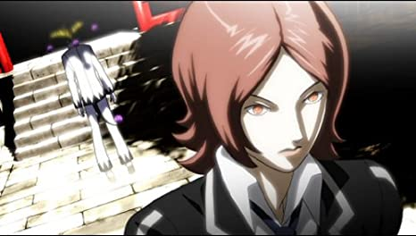
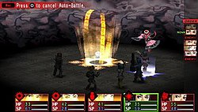
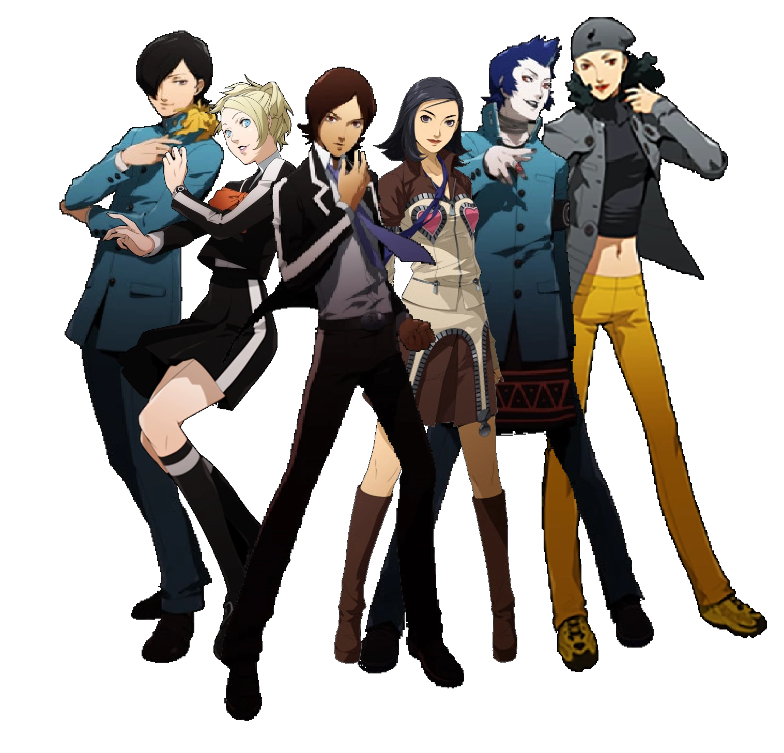
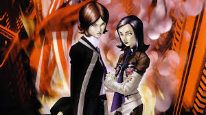

Jugabilidad
Escenario y personaje
Rankings
Persona 2: Innocent Sin es un videojuego de rol japones desarrollado y lanzado por Atlus para PlayStation en 1999. Es la segunda entrada en la serie Persona ,
en si misma una subserie de la franquicia Megami Tensei , y actua como un secuela de la Persona original . El juego fue relanzado en 2011 para PlayStation Portable .
La version original no estaba localizada para los territorios occidentales; sin embargo, la version de PSP fue lanzada en Norteamerica y Europa bajo el titulo
Shin Megami Tensei: Persona 2 - Innocent Sin.
Innocent Sin tiene lugar en la ciudad ficticia de Sumaru y se centra en un grupo de estudiantes de secundaria de Seven Sisters High School. El protagonista,
Tatsuya Suou , y un grupo de amigos deben enfrentarse a una figura malvada llamada Joker, que esta provocando la propagacion de rumores que distorsionan la realidad
por la ciudad. El grupo recibe ayuda en su busqueda de sus Personas, aspectos personificados de sus personalidades. El juego presenta un juego de batalla por turnos,
donde los personajes usan sus Personas en la batalla contra los demonios, y un sistema Rumor separado, donde los rumores que se extienden por la ciudad pueden influir
en los eventos a favor de los personajes.
El desarrollo de Innocent Sin comenzo despues del lanzamiento de Persona original y retuvo a la mayor parte del personal del original. El juego continuo con los temas
de la historia y la mecanica basica del juego de Persona , mientras cambiaba y mejoraba algunas de las mecanicas. Los personajes fueron disenados por Kazuma Kaneko y
Shigenori Soejima . El lanzamiento original no se localizo debido a la escasez de personal y las preocupaciones sobre su contenido. La recepcion del juego fue
generalmente positiva para su lanzamiento original, pero las criticas fueron mas variadas para su nueva version debido a su antiguedad. Una secuela directa de
Innocent Sin , Persona 2: Eternal Punishment , fue lanzada en 2000 en Japon y America del Norte.
 |
JUGABILIDAD
Persona 2: Innocent Sin es un juego de rol en el que el jugador toma el control de un grupo de estudiantes de secundaria mientras exploran la ciudad ficticia de
Sumaru. La camara sigue a la fiesta desde una perspectiva superior en angulo ajustable . La ciudad en general se navega usando un mapa del mundo.
El grupo principal del juego tiene capacidad para cinco personajes. Siempre que el grupo este en un area "segura" (es decir, una habitacion sin encuentros con demonios)
se puede conversar con cada miembro del grupo. La ruta del grupo a traves de las mazmorras se puede rastrear utilizando el Auto-Mapa
un plano de planta basico de la mazmorra actual. A medida que el personaje principal se mueve, el mapa marcara automaticamente nuevas areas.
Un elemento clave de la jugabilidad y la historia es el sistema Rumor: si el grupo escucha un rumor de un NPC, puede difundir ese rumor utilizando la agencia
de detectives Kuzunoha, haciendo que el rumor se vuelva real y creando efectos en el medio ambiente. Estos efectos pueden ir desde hacer que aparezca un accesorio
o un arma especifica del personaje, hasta activar la aparicion de nuevas tiendas para uso del grupo.
Las batallas incluyen encuentros desencadenados por la historia y encuentros aleatorios dentro de las mazmorras: durante estos encuentros, al grupo se le asigna un
conjunto de comandos y los ejecuta dentro de un turno, luego se le da la opción de cambiar su estrategia durante el siguiente turno. Durante la batalla
los personajes luchan usando ataques cuerpo a cuerpo, usan articulos comprados en tiendas fuera de la batalla y lanzan una variedad de hechizos usando sus Personas.
Cada personaje tiene una Persona inicial, y cada Persona tiene diferentes fortalezas y debilidades elementales. Se pueden usar diferentes Personas para defensa
curación o ataques elementales. Si bien una Persona es originalmente bastante debil, si se usa lo suficiente, alcanzara un rango mas alto. Ademas de las acciones
individuales, el jugador puede alinear personajes para activar un Hechizo de Fusion: cuando dos o mas miembros del grupo usan una determinada secuencia de hechizos
automaticamente convocaran a multiples Personas para generar un poderoso ataque. El grupo se puede controlar manualmente o actuar usando una opcion de Auto-batalla.
Durante las batallas, los jugadores pueden conversar con la mayoria de los enemigos: dependiendo de que personaje hable con que enemigo, desencadenara una respuesta
diferente. Si se habla con el enemigo de la manera correcta, dejara elementos o cartas magicas (cartas del tarot vinculadas a un determinado grupo familiar Arcanum o
Persona), elementos que se utilizan para invocar nuevas Personas: ciertas cartas dan acceso a diferentes grupos familiares de Persona. Despues de que una Persona es
convocada y asignada a un personaje, las estadisticas y habilidades de ese personaje cambian. Active Personas tambien se puede fusionar con cartas de hechizos para
crear versiones mas poderosas. Estas invocaciones y fusiones de Persona tienen lugar en Velvet Room, un lugar especial separado del resto de los entornos del juego
Ademas de las cartas de hechizos preestablecidas, el jugador tambien puede obtener cartas de habilidad en blanco formando contratos con enemigos a traves de la
conversacion correcta. Estas tarjetas de habilidades en blanco se pueden adaptar para adaptarse a una familia de Persona elegida.
 |
ESCENARIO Y PERSONAJES
 |
Innocent Sin tiene lugar en 1999 en Sumaru, una ciudad costera ficticia en Japon con una poblacion de mas de 1,28 millones.
La mayoria de los protagonistas provienen de dos escuelas secundarias en Sumaru: Seven Sisters, una prestigiosa escuela a la que asiste el protagonista
y la menos prestigiosa Kasugayama. Durante el transcurso del juego, los rumores populares de varios tipos en la ciudad comienzan a hacerse realidad
a veces con consecuencias nefastas. El grupo ejerce el poder de convocar Personas: se definen en el manual de instrucciones del juego como "otro lado de
[los protagonistas]".El poder de Persona es otorgado al partido por Filemon, un ser del inconsciente colectivo que actúa como guia espiritual y ayudante.
Un elemento clave de la historia es el Oraculo de Maia, una profecia que predice una serie de eventos que conduciran al fin del mundo durante una conjuncion
planetaria llamada Gran Cruz.
El protagonista de Innocent Sin es Tatsuya Suou , un estudiante de ultimo ano de Seven Sisters: popular entre la mayoria de los estudiantes, se mantiene aislado del
resto de la escuela. Mas tarde se une a otros estudiantes para investigar los acontecimientos en torno a Sumaru: Lisa "Ginko" Silverman, cuyos padres eran originarios
del extranjero antes de convertirse en ciudadanos japoneses; Eikichi "Michel" Mishina, un estudiante de segundo ano de Kasugayama High que es un delincuente notorio y
lider de una banda; Maya Amano, reportera de una revista para adolescentes; y Yukino "Yuki" Mayuzumi, ex alumno de St. Hermelin High y fotografo de Maya. Mas tarde se
les une Jun Kurosu, el mejor amigo de la infancia de Tatsuya y estudiante de segundo ano de Kasugayama High. Otros personajes importantes incluyen miembros del Circulo
Enmascarado, un grupo que influye en los rumores sobre Sumaru; y Nyarlathotep, un representante del inconsciente colectivo que actua como el opuesto de Philemon.
 |
RANKINGS
En su ano de lanzamiento, Innocent Sin alcanzo el puesto 62 en las listas de ventas japonesas, vendiendo 274.798 copias.
La nueva version de PSP alcanzo el puesto número 6 en la lista de ventas japonesa durante su primera semana de lanzamiento, vendiendo 62.721 unidades.
Cayo al numero 11 la semana siguiente, vendiendo otras 10.400 unidades. Para octubre de 2011, el juego habia vendido 110.000 unidades en Japon
ubicandose entre los titulos mas vendidos de Atlus ese ano. Durante su primera semana a la venta en America del Norte, alcanzo el segundo lugar en las
listas de ventas de PSP.
Al mismo tiempo, su calificacion total fue de un 75/100, siguiendo como un juego promedio una vez mas
 |
Menu principal |